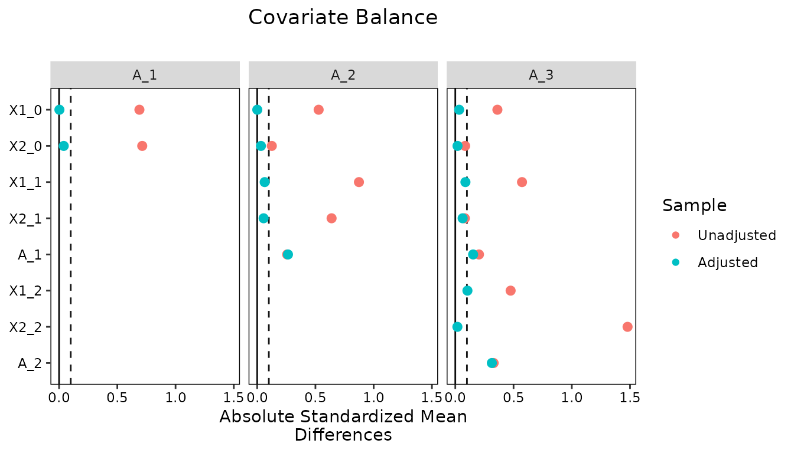

Longitudinal Treatments
Noah Greifer
2026-10-09
Source:vignettes/longitudinal-treatments.Rmd
longitudinal-treatments.RmdIntroduction
A longitudinal treatment is one that can be received, or not, at each of several time points, so that each unit has a treatment history rather than a single treatment status. Examples include a medication that can be started, stopped, and restarted at each clinic visit, a program a student can enroll in each semester, and a policy a jurisdiction can adopt in any year. The causal questions in these settings concern the joint effect of the treatments received across time: what would happen if units were treated at every time point compared with none, or at the first time point only compared with the last. Answering them requires accounting for time-varying confounding, in which covariates that are affected by earlier treatments go on to affect later treatments and the outcome. Standard regression adjustment cannot handle this (Daniel et al. 2013; Mansournia et al. 2017), and weighting is the usual remedy: weights are estimated for each unit’s treatment history and used to fit a marginal structural model (MSM) for the outcome as a function of the treatment history (Robins et al. 2000; Hernán et al. 2000). For introductions to MSMs, see Thoemmes and Ong (2016), VanderWeele et al. (2016), Cole and Hernán (2008), Williamson and Ravani (2017), Stallworthy et al. (2026), and Hernán and Robins (2020).
In WeightIt, weights for longitudinal treatments are
estimated with weightitMSM(), which fits a model for the
treatment at each time point and multiplies the resulting weights
together. This vignette explains the estimand and assumptions that are
specific to longitudinal treatments and then walks through an analysis:
estimating the weights, assessing balance at each time point, and
estimating the joint effect of the treatments with an MSM. A second,
briefer analysis shows how to account for loss to follow-up by including
censoring weights in the same workflow. The two analyses use the
simulated msmdata dataset included with WeightIt.
For an introduction to the functions in WeightIt, see
vignette("WeightIt"); for the weighting methods available,
see vignette("weighting-methods"); for effect estimation in
general, see vignette("estimating-effects"); and for a
fuller treatment of balance assessment with longitudinal treatments, see
vignette("longitudinal-treat", package = "cobalt").
Marginal Structural Models for Longitudinal Treatments
The Estimand
Consider a study with \(K\) time points. At each time point \(k\), covariates \(L_k\) are measured and then a treatment \(A_k\) is received; \(L_1\) contains the baseline covariates, and for \(k > 1\), \(L_k\) contains the covariates measured after treatment \(A_{k-1}\) and before treatment \(A_k\). The outcome \(Y\) is measured after the last treatment. We write \(\bar{A}_k = (A_1, \ldots, A_k)\) for the treatment history through time \(k\) and \(\bar{L}_k = (L_1, \ldots, L_k)\) for the covariate history, with \(\bar{A} = \bar{A}_K\) the full treatment history. A treatment regime \(\bar{a} = (a_1, \ldots, a_K)\) is a particular sequence of treatment values, and \(Y(\bar{a})\) is the potential outcome a unit would have had under regime \(\bar{a}\). With a binary treatment and three time points, there are eight regimes, from never treated, \((0, 0, 0)\), to always treated, \((1, 1, 1)\).
The estimands of interest are the expected potential outcomes under each regime, \(E[Y(\bar{a})]\), and contrasts between them. The contrast between always treated and never treated, \(E[Y(1, 1, 1)] - E[Y(0, 0, 0)]\), is the most common, but any pair of regimes can be compared, and the pattern across regimes answers questions about timing and duration, such as whether treatment at the last time point matters more than treatment at the first (Stallworthy et al. 2026). These are joint effects of the entire regime, not the effect of any one treatment holding the others fixed, and they are defined for the population from which the sample was drawn, so the estimand corresponds to the average treatment effect in the population (ATE); the other estimands available for point treatments do not apply.
A marginal structural model is a model for \(E[Y(\bar{a})]\) as a function of the regime (Robins et al. 2000; Robins 2000). It is marginal because it concerns the marginal distribution of the potential outcomes, averaged over the covariates, and structural because it describes potential rather than observed outcomes. For a binary outcome and three time points, a saturated MSM has a parameter for every regime, \[\text{logit}\, E[Y(a_1, a_2, a_3)] = \beta_0 + \beta_1 a_1 + \beta_2 a_2 + \beta_3 a_3 + \beta_4 a_1 a_2 + \beta_5 a_1 a_3 + \beta_6 a_2 a_3 + \beta_7 a_1 a_2 a_3,\] and imposes no assumptions about how the regimes relate to each other. A parsimonious MSM, such as one with only the main effects of the three treatments or one in which the outcome depends only on the number of time points treated, has fewer parameters and is more precise, but it is a modeling assumption that can be wrong. With few time points, the saturated model is preferable, and the simpler summaries a parsimonious model would provide, such as the average effect of treatment at one time point, can be recovered from it afterward, as we show below; with many time points, a parsimonious model is a practical necessity.
Time-Varying Confounding
With a point treatment, confounding is addressed by adjusting for the covariates that affect both the treatment and the outcome. With a longitudinal treatment, the covariates measured between treatments play a double role. A covariate \(L_2\) measured after \(A_1\) may be affected by \(A_1\), affect \(A_2\), and affect \(Y\): it is a confounder of the effect of \(A_2\) and, at the same time, a mediator of the effect of \(A_1\). Adjusting for \(L_2\) in a regression of \(Y\) on the treatment history removes the confounding of \(A_2\) but blocks the part of the effect of \(A_1\) that runs through \(L_2\) and, if \(L_2\) and \(Y\) share an unmeasured cause, opens a non-causal path between \(A_1\) and \(Y\) (collider stratification). Not adjusting for \(L_2\) leaves the effect of \(A_2\) confounded. No choice of covariates for the regression yields the joint effect of the regime (Robins 1986; Robins et al. 2000; Daniel et al. 2013; Hernán and Robins 2020).
Weighting escapes this dilemma because it uses the covariates to construct the weights rather than as terms in the outcome model. In the weighted sample, each treatment is independent of the covariate and treatment history that precedes it, as it would be in a sequentially randomized trial in which treatment at each time point is assigned at random, possibly with probabilities that depend on the past. The MSM is then fit to the weighted sample with only the treatment history (and, optionally, baseline covariates) on the right hand side, so the covariates affected by earlier treatments never enter the outcome model.
Assumptions
The weighting estimator of an MSM identifies the joint effects under the longitudinal versions of the usual assumptions (Robins et al. 2000; Hernán and Robins 2020).
Sequential exchangeability. At each time point, treatment is independent of the potential outcomes given the observed history: \(Y(\bar{a}) \perp A_k \mid \bar{A}_{k-1} = \bar{a}_{k-1}, \bar{L}_k\) for every \(k\) and every regime \(\bar{a}\). This is the assumption of no unmeasured confounding applied one time point at a time, and it requires that the covariates measured before each treatment include all the confounders of that treatment and the outcome, including the earlier treatments themselves. It cannot be verified from the data; its plausibility depends on what was measured and when.
Positivity. Every regime must have a positive probability of being received at every history that occurs in the population: \(P(A_k = a_k \mid \bar{A}_{k-1} = \bar{a}_{k-1}, \bar{L}_k = \bar{l}_k) > 0\) for all \(a_k\) and all histories \((\bar{a}_{k-1}, \bar{l}_k)\) with positive probability. Positivity is harder to satisfy with longitudinal treatments than with point treatments because it must hold at every time point, and because some treatment histories may be rare or absent by design (e.g., when a treatment, once started, is never stopped). Near-violations show up as very large weights (Westreich and Cole 2010; Platt et al. 2012; Cole and Hernán 2008).
Consistency and no interference. A unit’s observed outcome is its potential outcome under the regime it actually received, and a unit’s outcome does not depend on the treatments other units receive.
Correct specification. The models for treatment at each time point must be correctly specified, or at least must produce weights that balance the covariates at each time point, and the MSM must be correctly specified as a function of the regime. Misspecification of the treatment models biases the weights and the estimate (Lefebvre et al. 2008), which is why balance is assessed at every time point.
Inverse Probability Weights
The weights for an MSM are the product over time points of the
inverse of the probability of the treatment actually received, given the
history to that point (Robins et al.
2000): \[w_i = \prod_{k=1}^{K}
\frac{1}{P(A_k = A_{ik} \mid \bar{A}_{k-1} = \bar{A}_{i,k-1}, \bar{L}_k
= \bar{L}_{ik})}.\] Each factor is the weight that would be
estimated for a point treatment at time \(k\) with the history through time \(k\) as the covariates, and this is how
weightitMSM() computes them: it fits a treatment model at
each time point using the formula supplied for that time point and
multiplies the weights across time points. The factors can be estimated
with any of the methods described in
vignette("weighting-methods") that support longitudinal
treatments, which are the methods that estimate a propensity score
("glm", "gbm", "super",
"bart", "cbps", and "ipt"); the
optimization-based methods, which do not, cannot be used this way. The
covariate balancing propensity score can alternatively estimate all the
time points’ models at once so that the product of the weights balances
the covariates at every time point, which is requested with
is.MSM.method = TRUE (see Imai and Ratkovic 2015
for a related approach).
The product of many inverse probabilities can be very variable, and
the weights for a longitudinal treatment are often much more extreme
than for a point treatment. Stabilized weights replace the
numerator of each factor with the probability of the observed treatment
given the treatment history alone: \[sw_i =
\prod_{k=1}^{K} \frac{P(A_k = A_{ik} \mid \bar{A}_{k-1} =
\bar{A}_{i,k-1})}{P(A_k = A_{ik} \mid \bar{A}_{k-1} = \bar{A}_{i,k-1},
\bar{L}_k = \bar{L}_{ik})}.\] Stabilized weights have a mean of
1, are far less variable than unstabilized weights, and yield more
precise estimates (Robins et al. 2000;
Cole and Hernán
2008). They are requested with stabilize = TRUE,
which fits a saturated model of each treatment on the prior treatments
for the numerator. The numerator does not change the target population,
but it changes what the weights balance: in the stabilized weighted
sample, each treatment is independent of the covariate history
given the treatment history, and the association between
treatments at different time points is preserved. This has two
consequences. The MSM must include the treatment history flexibly enough
to absorb that association, which the saturated MSM does, and balance on
the prior treatments is not expected when assessing balance with
stabilized weights, as we will see below. Baseline covariates can also
be included in the numerator, which further reduces the variability of
the weights at the cost of changing the interpretation of the MSM unless
the same covariates are included in it; see Cole
and Hernán (2008) for
details and the num.formula argument of
weightitMSM() for how to request this.
Balance is assessed one time point at a time: at time \(k\), the weighted sample should show no
association between \(A_k\) and any
variable in \(\bar{A}_{k-1}\) or \(\bar{L}_k\). The cobalt package
computes the balance statistics for each time point and summarizes them
across time points, and the effective sample size at each time point
indicates the precision retained. These are the same criteria used to
choose among weighting specifications for a point treatment, applied at
each time point; see
vignette("longitudinal-treat", package = "cobalt") for the
tools and Jackson (2016)
for an alternative set of diagnostics.
Estimating Weights for a Longitudinal Treatment
The Data
We use msmdata, a simulated dataset of 7500 units from a
hypothetical study with three treatment periods. At each period, two
covariates are measured and then a binary treatment is received, and a
binary adverse outcome is measured after the third period. The
treatments and later covariates were generated to depend on the earlier
covariates and treatments, so the data exhibit time-varying confounding.
The dataset is in “wide” format, with one row per unit and a separate
column for each variable at each time point, which is the format
weightitMSM() requires; reshape() can be used
to convert data from long to wide format.
## X1_0 X2_0 A_1 X1_1 X2_1 A_2 X1_2 X2_2 A_3 Y_B
## 1 2 0 1 5 1 0 4 1 0 0
## 2 4 0 1 9 0 1 10 0 1 1
## 3 4 1 0 5 0 1 4 0 0 1
## 4 4 1 0 4 0 0 6 1 0 1
## 5 6 1 1 5 0 1 6 0 0 1
## 6 5 1 0 4 0 1 4 0 1 0The baseline covariates are X1_0 (a count) and
X2_0 (binary); A_1 is the first treatment;
X1_1 and X2_1 are measured after
A_1 and before A_2; X1_2 and
X2_2 are measured after A_2 and before
A_3; and Y_B is the outcome. In the notation
above, \(L_1 = (X1_0, X2_0)\), \(L_2 = (X1_1, X2_1)\), and \(L_3 = (X1_2, X2_2)\).
Initial Imbalance
The treatment model at each time point includes everything measured
before that treatment: at the first time point, the baseline covariates;
at the second, the baseline covariates, the first treatment, and the
covariates measured after it; and at the third, all of these plus the
second treatment and the covariates measured after it. We specify these
as a list of formulas in temporal order and supply the list to
bal.tab() to examine balance before weighting. Setting
which.time = .all displays a balance table for each time
point; the default, which.time = .none, displays only the
summary across time points.
bal.tab(list(A_1 ~ X1_0 + X2_0,
A_2 ~ X1_1 + X2_1 + A_1 + X1_0 + X2_0,
A_3 ~ X1_2 + X2_2 + A_2 + X1_1 + X2_1 + A_1 + X1_0 + X2_0),
data = msmdata, stats = c("m", "ks"),
which.time = .all)## Balance by Time Point
##
## ─── 1. Treatment: A_1 ────
##
## Balance Measures
## Type Diff.Un KS.Un
## X1_0 Contin. 0.690 0.276
## X2_0 Binary -0.325 0.325
##
## Sample sizes
## Control Treated
## All 3306 4194
##
## ─── 2. Treatment: A_2 ────
##
## Balance Measures
## Type Diff.Un KS.Un
## X1_1 Contin. 0.874 0.340
## X2_1 Binary -0.299 0.299
## A_1 Binary 0.127 0.127
## X1_0 Contin. 0.528 0.201
## X2_0 Binary -0.060 0.060
##
## Sample sizes
## Control Treated
## All 3701 3799
##
## ─── 3. Treatment: A_3 ────
##
## Balance Measures
## Type Diff.Un KS.Un
## X1_2 Contin. 0.475 0.212
## X2_2 Binary -0.594 0.594
## A_2 Binary 0.162 0.162
## X1_1 Contin. 0.573 0.237
## X2_1 Binary -0.040 0.040
## A_1 Binary 0.100 0.100
## X1_0 Contin. 0.361 0.148
## X2_0 Binary -0.040 0.040
##
## Sample sizes
## Control Treated
## All 4886 2614Every covariate is imbalanced at every time point, with standardized
mean differences well above .1, and the treatments at later time points
are associated with the treatments before them. A model for
Y_B that adjusted for all of these would block the effects
of the earlier treatments that run through the later covariates, so we
instead use them to estimate weights.
Estimating the Weights
The same list of formulas is supplied to weightitMSM().
With the default method = "glm", a logistic regression
model is fit for each treatment on the variables in its formula, and the
weights are the product of the inverse predicted probabilities. We start
with unstabilized weights.
W_un <- weightitMSM(list(A_1 ~ X1_0 + X2_0,
A_2 ~ X1_1 + X2_1 + A_1 + X1_0 + X2_0,
A_3 ~ X1_2 + X2_2 + A_2 + X1_1 + X2_1 + A_1 + X1_0 + X2_0),
data = msmdata, method = "glm")
W_un## A weightitMSM object
## - method: "glm" (propensity score weighting with GLM)
## - number of obs.: 7500
## - sampling weights: none
## - number of time points: 3 (A_1, A_2, A_3)
## - treatment:
## + time 1 (A_1): 2-category
## + time 2 (A_2): 2-category
## + time 3 (A_3): 2-category
## - covariates:
## + time 1 (A_1): X1_0, X2_0
## + time 2 (A_2): X1_1, X2_1, A_1, X1_0, X2_0
## + time 3 (A_3): X1_2, X2_2, A_2, X1_1, X2_1, A_1, X1_0, X2_0Printing the object displays the treatment and covariates at each
time point. summary() describes the distribution of the
weights, once for each time point, since the same weights are summarized
within the treatment groups defined at each time point.
summary(W_un)## Summary of weights
##
##
## ─── 1. Treatment: A_1 ───────────────────────────
##
## ─ Weight ranges:
##
## Min Max
## Treated 1.079 ╞═══════════════════════════╡ 403.5
## Control 1.276 ╞═══════════════════╡ 284.8
##
## ─ Units with the 5 most extreme weights by group:
##
## 5488 3440 3593 1286 5685
## Treated 166.992 170.555 196.414 213.193 403.483
## 2594 2932 5226 1875 2533
## Control 155.625 168.964 172.42 245.882 284.764
##
## ─ Weight statistics:
##
## Coef of Var MAD Entropy # Zeros
## Treated 1.914 0.816 0.649 0
## Control 1.706 0.862 0.67 0
##
## ─ Effective Sample Sizes:
##
## Control Treated
## Unweighted 3306. 4194.
## Weighted 845.8 899.4
##
## ─── 2. Treatment: A_2 ───────────────────────────
##
## ─ Weight ranges:
##
## Min Max
## Treated 1.079 ╞═══════════════════════════╡ 403.5
## Control 1.276 ╞════════════════╡ 245.9
##
## ─ Units with the 5 most extreme weights by group:
##
## 2932 3440 3593 2533 5685
## Treated 168.964 170.555 196.414 284.764 403.483
## 2594 5488 5226 1286 1875
## Control 155.625 166.992 172.42 213.193 245.882
##
## ─ Weight statistics:
##
## Coef of Var MAD Entropy # Zeros
## Treated 1.892 0.819 0.652 0
## Control 1.748 0.869 0.686 0
##
## ─ Effective Sample Sizes:
##
## Control Treated
## Unweighted 3701. 3799.
## Weighted 912.9 829.9
##
## ─── 3. Treatment: A_3 ───────────────────────────
##
## ─ Weight ranges:
##
## Min Max
## Treated 1.079 ╞═══════════════════════════╡ 403.5
## Control 1.276 ╞═════════╡ 148.2
##
## ─ Units with the 5 most extreme weights by group:
##
## 3593 1286 1875 2533 5685
## Treated 196.414 213.193 245.882 284.764 403.483
## 6862 168 3729 6158 3774
## Control 88.072 97.827 104.623 121.845 148.155
##
## ─ Weight statistics:
##
## Coef of Var MAD Entropy # Zeros
## Treated 1.832 0.975 0.785 0
## Control 1.254 0.683 0.412 0
##
## ─ Effective Sample Sizes:
##
## Control Treated
## Unweighted 4886 2614.
## Weighted 1900 600.1The weights are extremely variable, with a maximum of about 403 and
effective sample sizes around a quarter of the group sizes at the first
two time points. This is typical of unstabilized weights for a
longitudinal treatment, because the product of three inverse
probabilities, each of which can be large, is larger still. We refit the
weights with stabilize = TRUE, which multiplies each factor
by the probability of the observed treatment given the prior
treatments.
W <- weightitMSM(list(A_1 ~ X1_0 + X2_0,
A_2 ~ X1_1 + X2_1 + A_1 + X1_0 + X2_0,
A_3 ~ X1_2 + X2_2 + A_2 + X1_1 + X2_1 + A_1 + X1_0 + X2_0),
data = msmdata, method = "glm",
stabilize = TRUE)
W## A weightitMSM object
## - method: "glm" (propensity score weighting with GLM)
## - number of obs.: 7500
## - sampling weights: none
## - number of time points: 3 (A_1, A_2, A_3)
## - treatment:
## + time 1 (A_1): 2-category
## + time 2 (A_2): 2-category
## + time 3 (A_3): 2-category
## - covariates:
## + time 1 (A_1): X1_0, X2_0
## + time 2 (A_2): X1_1, X2_1, A_1, X1_0, X2_0
## + time 3 (A_3): X1_2, X2_2, A_2, X1_1, X2_1, A_1, X1_0, X2_0
## - stabilized; stabilization factors:
## + time 1 (A_1): (none)
## + time 2 (A_2): A_1
## + time 3 (A_3): A_1, A_2, A_1:A_2The printout now lists the stabilization factors, which are the prior treatments and their interactions at each time point.
summary(W)## Summary of weights
##
##
## ─── 1. Treatment: A_1 ───────────────────────────
##
## ─ Weight ranges:
##
## Min Max
## Treated 0.153 ╞═══════════════════════════╡ 57.08
## Control 0.109 ╞════════╡ 20.46
##
## ─ Units with the 5 most extreme weights by group:
##
## 4390 3440 3774 3593 5685
## Treated 22.101 24.128 25.7 27.786 57.079
## 6659 6284 1875 6163 2533
## Control 12.894 13.09 14.523 14.705 20.465
##
## ─ Weight statistics:
##
## Coef of Var MAD Entropy # Zeros
## Treated 1.779 0.775 0.573 0
## Control 1.331 0.752 0.486 0
##
## ─ Mean of Weights:
##
## Treated 0.984
## Control 1.002
##
## ─ Effective Sample Sizes:
##
## Control Treated
## Unweighted 3306 4194
## Weighted 1193 1007
##
## ─── 2. Treatment: A_2 ───────────────────────────
##
## ─ Weight ranges:
##
## Min Max
## Treated 0.109 ╞═══════════════════════════╡ 57.08
## Control 0.15 ╞════════╡ 20.49
##
## ─ Units with the 5 most extreme weights by group:
##
## 4390 3440 3774 3593 5685
## Treated 22.101 24.128 25.7 27.786 57.079
## 1875 6163 6862 1286 6158
## Control 14.523 14.705 14.808 16.231 20.486
##
## ─ Weight statistics:
##
## Coef of Var MAD Entropy # Zeros
## Treated 1.797 0.779 0.58 0
## Control 1.359 0.75 0.488 0
##
## ─ Mean of Weights:
##
## Treated 0.985
## Control 0.998
##
## ─ Effective Sample Sizes:
##
## Control Treated
## Unweighted 3701 3799.
## Weighted 1300 898.2
##
## ─── 3. Treatment: A_3 ───────────────────────────
##
## ─ Weight ranges:
##
## Min Max
## Treated 0.109 ╞═══════════════════════════╡ 57.08
## Control 0.208 ╞═══════════╡ 25.7
##
## ─ Units with the 5 most extreme weights by group:
##
## 3576 4390 3440 3593 5685
## Treated 20.583 22.101 24.128 27.786 57.079
## 6163 6862 168 6158 3774
## Control 14.705 14.808 16.97 20.486 25.7
##
## ─ Weight statistics:
##
## Coef of Var MAD Entropy # Zeros
## Treated 2.008 0.931 0.753 0
## Control 1.269 0.672 0.407 0
##
## ─ Mean of Weights:
##
## Treated 1.038
## Control 0.967
##
## ─ Effective Sample Sizes:
##
## Control Treated
## Unweighted 4886 2614.
## Weighted 1871 519.8The largest weight has dropped to about 57, and the effective sample sizes have risen at every time point. The weights have a mean close to 1, as stabilized weights should.
Assessing Balance
Supplying the weightitMSM object to
bal.tab() assesses balance in the weighted sample at each
time point.
## Balance by Time Point
##
## ─── 1. Treatment: A_1 ──────
##
## Balance Measures
## Type Diff.Adj KS.Adj
## X1_0 Contin. 0.003 0.013
## X2_0 Binary -0.018 0.018
##
## Effective sample sizes
## Control Treated
## Unadjusted 3306 4194
## Adjusted 1193 1007
##
## ─── 2. Treatment: A_2 ──────
##
## Balance Measures
## Type Diff.Adj KS.Adj
## X1_1 Contin. 0.064 0.028
## X2_1 Binary -0.026 0.026
## A_1 Binary 0.130 0.130
## X1_0 Contin. -0.001 0.013
## X2_0 Binary -0.015 0.015
##
## Effective sample sizes
## Control Treated
## Unadjusted 3701 3799.
## Adjusted 1300 898.2
##
## ─── 3. Treatment: A_3 ──────
##
## Balance Measures
## Type Diff.Adj KS.Adj
## X1_2 Contin. 0.104 0.054
## X2_2 Binary -0.007 0.007
## A_2 Binary 0.154 0.154
## X1_1 Contin. 0.087 0.039
## X2_1 Binary -0.031 0.031
## A_1 Binary 0.075 0.075
## X1_0 Contin. 0.033 0.018
## X2_0 Binary 0.009 0.009
##
## Effective sample sizes
## Control Treated
## Unadjusted 4886 2614.
## Adjusted 1871 519.8The covariates are balanced at every time point, with all
standardized mean differences and Kolmogorov-Smirnov statistics near or
below .1. The prior treatments are a different matter: A_1
remains associated with A_2 at the second time point, and
A_2 with A_3 at the third, with standardized
mean differences about as large as before weighting. This is expected
with stabilized weights, whose numerator preserves the association among
the treatments, and it is not a deficiency of the weights as long as the
MSM includes the treatment history, which the saturated MSM we fit below
does. Because the covariates are themselves associated with the prior
treatments, small imbalances in the covariates can also appear in these
marginal comparisons with stabilized weights; what the weights guarantee
is balance within levels of the treatment history. With unstabilized
weights, the prior treatments would be balanced as well, which can be
verified by running bal.tab(W_un, which.time = .all).
The summary across time points reports the largest imbalance for each
variable across the time points at which it appears, which is a
convenient way to check the whole specification at once; it is displayed
by default when which.time is not set.
##
## Balance summary across all time points
## Times Type Max.Diff.Adj Max.KS.Adj
## X1_0 1, 2, 3 Contin. 0.033 0.018
## X2_0 1, 2, 3 Binary 0.018 0.018
## X1_1 2, 3 Contin. 0.087 0.039
## X2_1 2, 3 Binary 0.031 0.031
## A_1 2, 3 Binary 0.130 0.130
## X1_2 3 Contin. 0.104 0.054
## X2_2 3 Binary 0.007 0.007
## A_2 3 Binary 0.154 0.154
## Effective sample sizes
## - 1. Treatment: A_1
## Control Treated
## Unadjusted 3306 4194
## Adjusted 1193 1007
## - 2. Treatment: A_2
## Control Treated
## Unadjusted 3701 3799.
## Adjusted 1300 898.2
## - 3. Treatment: A_3
## Control Treated
## Unadjusted 4886 2614.
## Adjusted 1871 519.8love.plot() displays the same information graphically,
with one panel per time point.
love.plot(W, stats = "m", binary = "std", abs = TRUE,
thresholds = .1, which.time = .all)
The one covariate that remains slightly above the .1 threshold is
X1_2 at the third time point. Had this been larger, we
would try another specification, as for a point treatment: adding
squared terms or interactions to the treatment models, changing the
method, or both. One option specific to longitudinal treatments is the
covariate balancing propensity score with
is.MSM.method = TRUE, which estimates all the treatment
models at once so that the product of the weights exactly balances the
covariate means at every time point (Imai and Ratkovic
2014, 2015).
W_cbps <- weightitMSM(list(A_1 ~ X1_0 + X2_0,
A_2 ~ X1_1 + X2_1 + A_1 + X1_0 + X2_0,
A_3 ~ X1_2 + X2_2 + A_2 + X1_1 + X2_1 + A_1 + X1_0 + X2_0),
data = msmdata, method = "cbps",
is.MSM.method = TRUE)
bal.tab(W_cbps, stats = c("m", "ks"))##
## Balance summary across all time points
## Times Type Max.Diff.Adj Max.KS.Adj
## X1_0 1, 2, 3 Contin. 0 0.020
## X2_0 1, 2, 3 Binary 0 0.000
## X1_1 2, 3 Contin. 0 0.038
## X2_1 2, 3 Binary 0 0.000
## A_1 2, 3 Binary 0 0.000
## X1_2 3 Contin. 0 0.022
## X2_2 3 Binary 0 0.000
## A_2 3 Binary 0 0.000
## Effective sample sizes
## - 1. Treatment: A_1
## Control Treated
## Unadjusted 3306. 4194.
## Adjusted 851.8 775.7
## - 2. Treatment: A_2
## Control Treated
## Unadjusted 3701. 3799.
## Adjusted 893.2 744.3
## - 3. Treatment: A_3
## Control Treated
## Unadjusted 4886 2614.
## Adjusted 1610 542.8Mean balance is now exact at every time point, including on the prior treatments, at the cost of a lower effective sample size than the stabilized logistic regression weights achieve. Because M-estimation is not available for this version of CBPS, standard errors after weighting would have to be bootstrapped. The two specifications represent the usual trade-off between balance and precision, and either could be defended here; we proceed with the stabilized logistic regression weights, whose balance is adequate and which support standard errors that account for the estimation of the weights.
Estimating the Treatment Effect
The MSM is fit with glm_weightit(), which incorporates
the weights and, for method = "glm", computes standard
errors that account for their estimation using M-estimation, including
the estimation of the stabilization factors. The outcome model includes
the three treatments and all their interactions, so that it is saturated
in the regime, along with the baseline covariates interacted with the
treatments. Baseline covariates are measured before any treatment and
are the only covariates that may be included; including any of the later
covariates would reintroduce the problem that weighting was used to
avoid. See vignette("estimating-effects") for the general
procedure and for bootstrap standard errors, which are requested with
the vcov argument.
fit <- glm_weightit(Y_B ~ A_1 * A_2 * A_3 * (X1_0 + X2_0),
data = msmdata, weightit = W,
family = binomial)The coefficients of this model are not themselves of interest.
Instead, we use g-computation through the marginaleffects
package to compute the expected potential outcome under each regime,
which is the average over the sample of the predicted probability of the
outcome with the treatments set to the values of that regime. Supplying
the three treatments to variables in
avg_predictions() produces one estimate per regime.
library("marginaleffects")
p <- avg_predictions(fit, variables = c("A_1", "A_2", "A_3"))
p##
## A_1 A_2 A_3 Estimate Std. Error z Pr(>|z|) S 2.5 % 97.5 %
## 0 0 0 0.687 0.0166 41.4 <0.001 Inf 0.654 0.719
## 0 0 1 0.521 0.0379 13.7 <0.001 140.3 0.447 0.595
## 0 1 0 0.491 0.0213 23.1 <0.001 389.1 0.449 0.532
## 0 1 1 0.438 0.0295 14.8 <0.001 163.2 0.380 0.496
## 1 0 0 0.602 0.0211 28.5 <0.001 590.8 0.561 0.644
## 1 0 1 0.544 0.0314 17.3 <0.001 221.0 0.482 0.605
## 1 1 0 0.378 0.0163 23.2 <0.001 393.1 0.346 0.410
## 1 1 1 0.422 0.0261 16.1 <0.001 192.3 0.371 0.473
##
## Type: probsEach row is a regime. The first row, with all three treatments set to 0, estimates that 68.7% of units would experience the adverse event if no one were treated at any time point, and the last row, with all three set to 1, estimates that 42.2% would if everyone were treated at every time point. The rows in between describe the effects of partial regimes; for example, treatment at the third time point alone (the second row) reduces the risk by more than treatment at the first time point alone (the fifth row).
To compare the regimes, we supply the predictions to
hypotheses(). Setting the hypothesis to
~reference contrasts each regime with the first, the
never-treated regime.
hypotheses(p, ~reference)##
## Hypothesis Estimate Std. Error z Pr(>|z|) S 2.5 % 97.5 %
## (b2) - (b1) -0.1658 0.0414 -4.00 < 0.001 14.0 -0.247 -0.0846
## (b3) - (b1) -0.1960 0.0269 -7.29 < 0.001 41.5 -0.249 -0.1433
## (b4) - (b1) -0.2488 0.0337 -7.38 < 0.001 42.6 -0.315 -0.1828
## (b5) - (b1) -0.0842 0.0270 -3.12 0.00179 9.1 -0.137 -0.0314
## (b6) - (b1) -0.1428 0.0356 -4.02 < 0.001 14.0 -0.212 -0.0731
## (b7) - (b1) -0.3083 0.0232 -13.30 < 0.001 131.6 -0.354 -0.2629
## (b8) - (b1) -0.2647 0.0308 -8.61 < 0.001 56.9 -0.325 -0.2044A specific contrast is requested by naming the rows. The joint effect of always being treated relative to never being treated is the difference between the eighth and first rows, and the corresponding risk ratio is their quotient.
hypotheses(p, "b8 - b1 = 0")##
## Hypothesis Estimate Std. Error z Pr(>|z|) S 2.5 % 97.5 %
## b8-b1=0 -0.265 0.0308 -8.61 <0.001 56.9 -0.325 -0.204
hypotheses(p, "b8 / b1 = 0")##
## Hypothesis Estimate Std. Error z Pr(>|z|) S 2.5 % 97.5 %
## b8/b1=0 0.615 0.0407 15.1 <0.001 169.0 0.535 0.694Being treated at all three time points rather than none reduces the
risk of the adverse event by 26.5 percentage points, with a 95%
confidence interval from 20.4 to 32.5 points, which corresponds to a
risk ratio of 0.61. The standard errors here account for the estimation
of the weights and the stabilization factors; because they were computed
with M-estimation, no bootstrapping was needed, though bootstrapping
remains an option by setting vcov = "FWB" or
vcov = "BS" in glm_weightit().
Summaries that a parsimonious MSM would provide can be recovered from
the saturated model rather than by fitting a second, more restrictive
model. For example, the average effect of treatment at each time point,
averaging over the treatments the units received at the other time
points, is computed by avg_comparisons(), which for each
time point sets that treatment to 1 and then to 0 for every unit,
leaving the other treatments at their observed values, and averages the
difference.
avg_comparisons(fit, variables = c("A_1", "A_2", "A_3"))##
## Term Estimate Std. Error z Pr(>|z|) S 2.5 % 97.5 %
## A_1 -0.0677 0.0171 -3.95 <0.001 13.7 -0.1012 -0.0341
## A_2 -0.1783 0.0153 -11.64 <0.001 101.7 -0.2083 -0.1483
## A_3 -0.0597 0.0167 -3.58 <0.001 11.5 -0.0923 -0.0270
##
## Type: probs
## Comparison: 1 - 0These are the quantities a main-effects MSM would approximate, but
they are estimated without assuming that the effects of the treatments
are additive, and the saturated predictions above show that they are
not: treatment at the third time point has a smaller effect among units
treated at the second than among units not treated at the second. Any
other summary of the regime-specific means, such as the effect of the
number of time points treated, can be requested in the same way through
hypotheses() on the predictions.
Accounting for Loss to Follow-Up
The Estimand with Censoring
In most longitudinal studies, some units stop being observed before the end of the study, so their later treatments and their outcome are unknown. If the units who drop out differ from those who remain in ways related to the outcome, an analysis restricted to the units who remain estimates the effect in a different population from the one the sample represents, and if dropout depends on a common cause of the treatment and the outcome, restricting to the uncensored units induces a non-causal association between them. Both are forms of selection bias (Hernán et al. 2004; Lu et al. 2022; Hernán and Robins 2020). The remedy is to weight the units who remain so that they resemble the full sample that was at risk of dropping out, using inverse probability of censoring weights (IPCW) (Robins et al. 1995; Robins and Finkelstein 2000; Hernán et al. 2000; Cole and Hernán 2008; Seaman and White 2013).
With censoring, the potential outcome is \(Y(\bar{a}, \bar{c} = 0)\), the outcome under regime \(\bar{a}\) had the unit also remained under observation throughout, and the estimand is the contrast of \(E[Y(\bar{a}, \bar{c} = 0)]\) across regimes. Identification requires an exchangeability assumption for censoring parallel to the one for treatment: at each time point, remaining under observation must be independent of the potential outcomes given the observed treatment and covariate history. It also requires positivity for censoring, meaning that every history must have a positive probability of remaining under observation. The censoring weights are the product over time points of the inverse of the probability of remaining under observation given the history, \[w^C_i = \prod_{k} \frac{1}{P(C_k = 0 \mid \bar{A}_k = \bar{A}_{ik}, \bar{L}_k = \bar{L}_{ik}, \bar{C}_{k-1} = 0)},\] where \(C_k = 1\) indicates that the unit was censored at time \(k\). The final weight for each unit is the product of its treatment weights and its censoring weights, and a censored unit receives a weight of 0. Censoring weights can be stabilized in the same way as treatment weights, with the probability of remaining under observation given the treatment history in the numerator.
In weightitMSM(), a censoring model is a formula whose
left side is wrapped in .cens(), placed in the list of
formulas at the time point at which the censoring occurs. The censoring
indicator must be 1 for units censored at that time point and 0 for
units still under observation, following the survival convention. Each
model in the list is fit only among the units still under observation
when it is reached, so the treatments and covariates that are missing
for censored units cause no problems. See ?.cens and
?weightitMSM for details.
Simulating Loss to Follow-Up
msmdata has no censoring, so we create some. Below, we
simulate dropout after the covariates of the third period are measured
but before the third treatment is received, with dropout more likely for
units with higher values of X1_2 and for units treated at
the second period. Units who drop out have no third treatment and no
outcome, so we set those variables to missing for them, as they would be
in real data.
set.seed(7)
msmdata$C_2 <- rbinom(nrow(msmdata), 1,
prob = plogis(-4 + .35 * msmdata$X1_2 + .8 * msmdata$A_2))
# A_3 and Y_B are unobserved for units lost to follow-up
is.na(msmdata[msmdata$C_2 == 1, c("A_3", "Y_B")]) <- TRUE
table(msmdata$C_2)##
## 0 1
## 6144 1356About 18% of the sample is lost to follow-up.
Estimating the Weights
The censoring model goes in the list of formulas after the second treatment model and before the third, and it includes the same history as the treatment model that follows it, since anything that affects both dropout and the outcome must be included. We request stabilized weights as before.
Wc <- weightitMSM(list(A_1 ~ X1_0 + X2_0,
A_2 ~ X1_1 + X2_1 + A_1 + X1_0 + X2_0,
.cens(C_2) ~ X1_2 + X2_2 + A_2 + X1_1 + X2_1 + A_1 + X1_0 + X2_0,
A_3 ~ X1_2 + X2_2 + A_2 + X1_1 + X2_1 + A_1 + X1_0 + X2_0),
data = msmdata, method = "glm",
stabilize = TRUE)
Wc## A weightitMSM object
## - method: "glm" (propensity score weighting with GLM)
## - number of obs.: 7500
## - sampling weights: none
## - number of time points: 4 (A_1, A_2, C_2, A_3)
## - treatment:
## + time 1 (A_1): 2-category
## + time 2 (A_2): 2-category
## + time 3 (C_2): censoring (IPCW); 1356 of 7500 units censored
## + time 4 (A_3): 2-category
## - covariates:
## + time 1 (A_1): X1_0, X2_0
## + time 2 (A_2): X1_1, X2_1, A_1, X1_0, X2_0
## + time 3 (C_2): X1_2, X2_2, A_2, X1_1, X2_1, A_1, X1_0, X2_0
## + time 4 (A_3): X1_2, X2_2, A_2, X1_1, X2_1, A_1, X1_0, X2_0
## - stabilized; stabilization factors:
## + time 1 (A_1): (none)
## + time 2 (A_2): A_1
## + time 3 (C_2): A_1, A_2, A_1:A_2
## + time 4 (A_3): A_1, A_2, A_1:A_2The printout identifies the third entry as a censoring model and
reports how many units were censored. The weights are the product of all
four models’ weights, and the censored units have weights of exactly 0,
which summary() reports in its # Zeros column;
we display the summary for the censoring model and the final treatment
model only.
summary(Wc, which.time = 3:4)## Summary of weights
##
##
## ─── 3. Censoring: C_2 ───────────────────────────
##
## ─ Weight ranges:
##
## Min Max
## All 0.125 ╞═══════════════════════════╡ 44.84
##
## ─ Units with the 5 most extreme weights:
##
## 6862 3774 3440 6158 5685
## All 18.112 18.382 18.528 21.866 44.845
##
## ─ Weight statistics:
##
## Coef of Var MAD Entropy # Zeros
## All 1.494 0.746 0.505 0
##
## ─ Mean of Weights:
##
## All 0.977
##
## ─ Effective Sample Sizes:
##
## Total
## Unweighted 7500
## Weighted 1902
##
## ─── 4. Treatment: A_3 ───────────────────────────
##
## ─ Weight ranges:
##
## Min Max
## Treated 0.125 ╞═══════════════════════════╡ 44.84
## Control 0.185 ╞════════════╡ 21.87
##
## ─ Units with the 5 most extreme weights by group:
##
## 1286 4390 2533 3440 5685
## Treated 15.249 15.904 16.321 18.528 44.845
## 6968 2827 6862 3774 6158
## Control 15.965 17.903 18.112 18.382 21.866
##
## ─ Weight statistics:
##
## Coef of Var MAD Entropy # Zeros
## Treated 1.773 0.893 0.663 0
## Control 1.327 0.672 0.425 0
##
## ─ Mean of Weights:
##
## Treated 0.993
## Control 0.969
##
## ─ Effective Sample Sizes:
##
## Control Treated
## Unweighted 4120 2024.
## Weighted 1493 488.8The censoring model’s entry summarizes the weights among the units
still under observation, and its effective sample size is measured
against that sample. The final treatment model was fit among the 6144
units who remained, which the at.risk component of the
output records.
Assessing Balance
Balance is assessed as before, with one table per model. For the censoring model, the comparison is between the weighted units who remained under observation and the full sample at risk, rather than between two treatment groups; the weights are designed to make the first resemble the second.
## Balance by Time Point
##
## ─── 3. Censoring: C_2 ──────
##
## Balance Measures
## Type Diff.Adj KS.Adj
## X1_2 Contin. 0.096 0.043
## X2_2 Binary -0.020 0.020
## A_2 Binary 0.071 0.071
## X1_1 Contin. 0.050 0.021
## X2_1 Binary 0.012 0.012
## A_1 Binary 0.031 0.031
## X1_0 Contin. 0.005 0.010
## X2_0 Binary 0.006 0.006
##
## Effective sample sizes
## Total
## Full 7500
## Uncensored 6144
## Adjusted 1902
## Censored 1356
##
## ─── 4. Treatment: A_3 ──────
##
## Balance Measures
## Type Diff.Adj KS.Adj
## X1_2 Contin. 0.079 0.045
## X2_2 Binary -0.035 0.035
## A_2 Binary 0.148 0.148
## X1_1 Contin. 0.089 0.042
## X2_1 Binary -0.005 0.005
## A_1 Binary 0.082 0.082
## X1_0 Contin. 0.026 0.019
## X2_0 Binary 0.012 0.012
##
## Effective sample sizes
## 0 1
## Unadjusted 4120 2024.
## Adjusted 1493 488.8In the censoring table, the standardized mean differences between the
weighted uncensored sample and the full sample are small for the
covariates, with X1_2, the strongest predictor of dropout,
the largest, and the association with A_2 is preserved by
the stabilization as with the treatments. At the third treatment,
assessed among the units who remained, the covariates are balanced. As
with any weighting specification, the balance tables and the effective
sample sizes should guide the choice of the censoring model’s
specification and the weighting method.
Estimating the Treatment Effect
The outcome model is fit exactly as before. Censored units have a
weight of 0 and a missing outcome, and glm_weightit()
tolerates missing values in the outcome and treatments for units whose
weight is 0, so they are dropped from the fit without any change to the
call.
fit_c <- glm_weightit(Y_B ~ A_1 * A_2 * A_3 * (X1_0 + X2_0),
data = msmdata, weightit = Wc,
family = binomial)
p_c <- avg_predictions(fit_c, variables = c("A_1", "A_2", "A_3"))
p_c##
## A_1 A_2 A_3 Estimate Std. Error z Pr(>|z|) S 2.5 % 97.5 %
## 0 0 0 0.681 0.0174 39.2 <0.001 Inf 0.647 0.715
## 0 0 1 0.476 0.0384 12.4 <0.001 114.8 0.400 0.551
## 0 1 0 0.474 0.0233 20.3 <0.001 302.4 0.428 0.520
## 0 1 1 0.414 0.0293 14.1 <0.001 148.1 0.357 0.472
## 1 0 0 0.593 0.0227 26.2 <0.001 498.4 0.549 0.638
## 1 0 1 0.531 0.0324 16.4 <0.001 198.1 0.467 0.594
## 1 1 0 0.350 0.0181 19.3 <0.001 273.7 0.314 0.385
## 1 1 1 0.422 0.0325 13.0 <0.001 125.4 0.358 0.486
##
## Type: probs
hypotheses(p_c, "b8 - b1 = 0")##
## Hypothesis Estimate Std. Error z Pr(>|z|) S 2.5 % 97.5 %
## b8-b1=0 -0.259 0.0367 -7.06 <0.001 39.2 -0.331 -0.187The estimated effect of always being treated relative to never being
treated is a reduction in risk of 25.9 percentage points. Because we
introduced the censoring ourselves, we can compare this with the
estimate from the full data above, a reduction of 26.5 points. An
analysis that simply dropped the censored units would not recover this
estimate in general: the units who dropped out had higher values of
X1_2, which raises the risk of the outcome, so the units
who remained are a lower-risk population in which the treatment contrast
differs, and because dropout also depended on A_2,
restricting to the units who remained induces an association between
A_2 and X1_2 that treatment weights estimated
among those units would not remove. The censoring weights restore the
composition of the original sample and break that association. How large
the bias from ignoring censoring would be in real data is unknown, which
is why censoring should be modeled whenever it is plausibly related to
the covariates or treatments. Note that because the censoring weights
multiply the treatment weights, the final weights can be more variable
than either set alone, and balance at the time points after the
censoring should be examined with particular care. When dropout depends
strongly on the history, the censoring weights themselves become
extreme, and weighting can perform poorly even when the censoring model
is correct (Howe et al.
2011).
Other Considerations
The treatments at different time points need not be of the same type:
weightitMSM() accepts binary, multi-category, and
continuous treatments in any combination, with the weights at each time
point computed as they would be for a point treatment of that type. The
weighting method applies to every time point; to use different methods
or options at different time points, the weights can be estimated
separately with weightit() and multiplied by hand.
As the number of time points grows, the product of the weights
becomes more variable, the saturated stabilization model and the
saturated MSM gain parameters quickly, and positivity becomes harder to
satisfy. Trimming the weights with trim(), using a
parsimonious stabilization model through num.formula, and
fitting a parsimonious MSM are the usual responses, each with the costs
described above. Whatever the number of time points, the data must have
one row per unit, so a dataset in long format must be reshaped to wide
format before calling weightitMSM().
Sampling weights can be supplied through s.weights, and
missing covariate values among the units still under observation are
handled as described on the help page for each method. For questions
about the dosage and timing of exposures in developmental research,
Stallworthy et al. (2026)
describe the devMSMs package, which provides a structured
workflow for specifying, fitting, and interpreting MSMs for such
questions. When reporting the analysis, the treatment and censoring
models at each time point, the stabilization, the balance achieved at
each time point, the effective sample sizes, and the form of the MSM
should all be described; see vignette("estimating-effects")
for reporting the effect estimates.